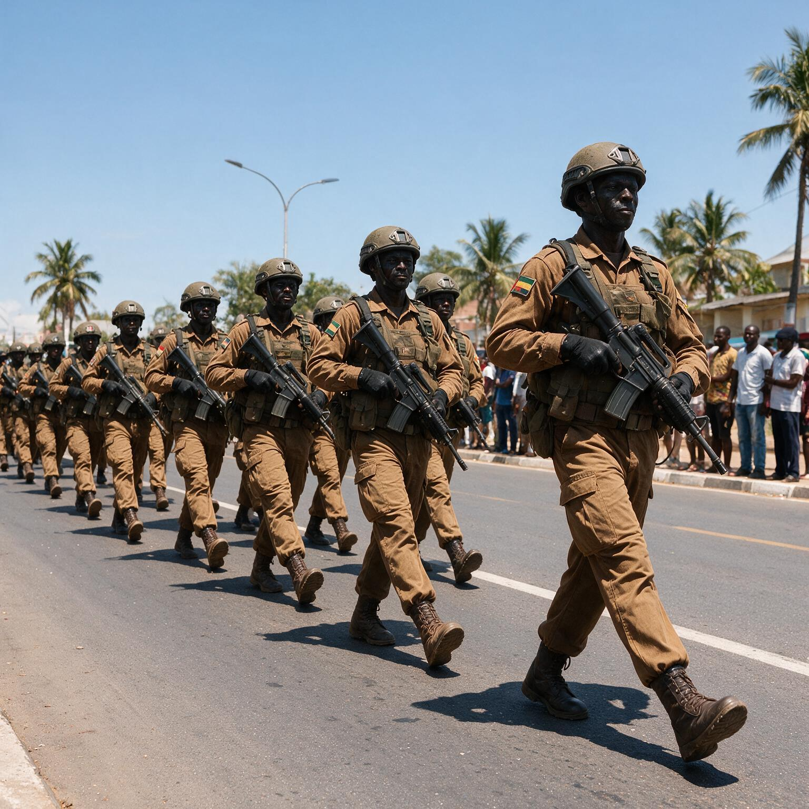
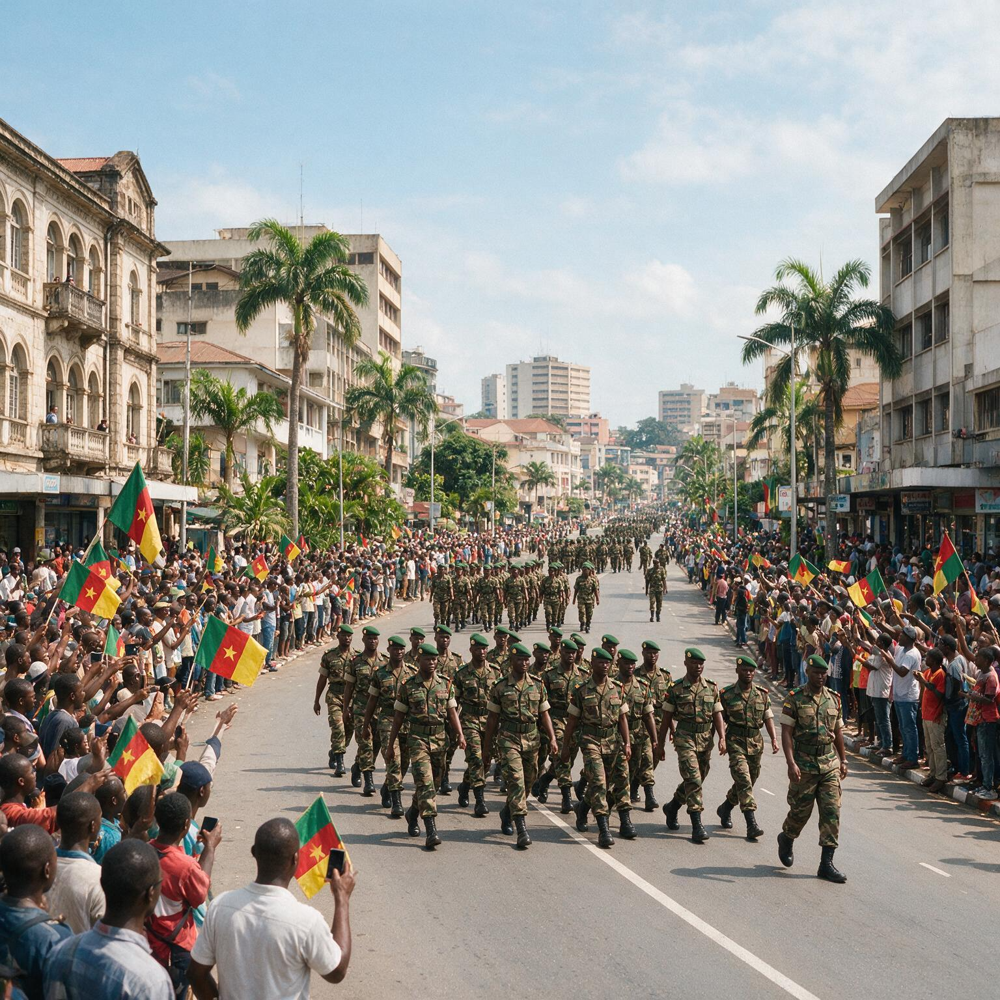
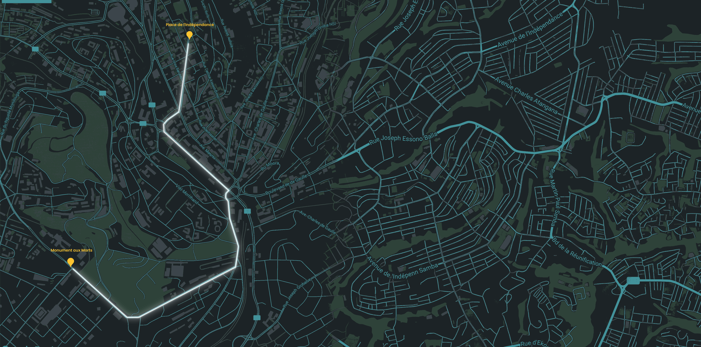

Ils se sont sacrifiés pour notre paix.
Aujourd'hui, offrons-leur notre reconnaissance.
À ceux qui ne sont jamais revenus. À ceux qui sont revenus blessés. À tous ceux qui ont servi le Cameroun.
POURQUOI LE 14 AOÛT ?
UNE DATE QUI PORTE LA MÉMOIRE DE LA NATION
Le 14 août n'est pas une date choisie au hasard. C'est le jour où, en 2008, la presqu'île de Bakassi a été rétrocédée au Cameroun — l'aboutissement d'un long combat pour la souveraineté et l'intégrité territoriale du pays.
Cette victoire, la Nation la doit à celles et ceux qui ont servi, qui se sont battus, qui parfois n'en sont jamais revenus.
C'est pourquoi cette date est devenue, depuis 2008, la Journée du Souvenir : un jour où le Cameroun s'arrête pour se souvenir de ceux qui sont tombés pour la Patrie, honorer ceux qui ont servi, et transmettre aux générations futures les valeurs de courage, de sacrifice et d'unité nationale.
CE QUE CETTE JOURNÉE REPRÉSENTE
Se souvenir, ce n'est pas regarder en arrière. C'est comprendre ce qui a été sacrifié pour que nous ayons, aujourd'hui, la paix et la souveraineté sur notre territoire.
C'est aussi un acte tourné vers l'avenir : transmettre cette mémoire aux jeunes générations, pour qu'elles sachent d'où vient leur pays — et ce qu'il a fallu pour le défendre.
LE CONCEPT WALK FOR HONOR
La journée s'ouvre au Monument aux Morts, par une prise d'armes en hommage à ceux qui sont tombés pour la Patrie.
De là, une marche patriotique rassemble la Nation : anciens combattants, militaires, jeunes, familles et citoyens, côte à côte, jusqu'à la Place de l'Indépendance.
Marcher, ce jour-là, c'est transformer l'hommage officiel en un geste collectif. Ce n'est plus seulement assister à une cérémonie — c'est y prendre part.
Ils se sont sacrifiés pour notre paix. Aujourd'hui, offrons-leur notre reconnaissance.


À chaque pas, nous gardons leur mémoire vivante.
Nous rappelons à tous que leur engagement ne sera jamais oublié.
Car une Nation qui se souvient est une Nation qui grandit.
INFOS PRATIQUES
DATE : 14 AOÛT — YAOUNDÉ
La Journée du Souvenir se tient à Yaoundé, jour de rassemblement national autour de nos héros.
LIEU : YAOUNDÉ
La marche relie plusieurs lieux symboliques de la capitale.
POINT DE RASSEMBLEMENT :
MONUMENT AUX MORTS.
TEMPS: 08:30
Le rassemblement débutera tôt le matin, à 08h30, afin d'assurer un démarrage unifié et ponctuel.
KIT PARTICIPANT : UN T-SHIRT BLANC + UNE BOUTEILLE D'EAU
Chaque participant reçoit son kit sur place le jour de la marche.

ITINÉRAIRE
Un parcours à travers l'histoire de la ville, du Monument aux Morts à la Place de l'Indépendance.
-
Départ : Monument aux Morts (prise d'armes et hommage)
-
Ministère de la Défense
Symbole de l'unité nationale
-
Poste Centrale
Hommage aux forces armées
-
Boulevard du 20 Mai
Expression du patriotisme
-
Carrefour « J'aime mon pays »
Expression du patriotisme
-
Montée Abbia
Dernière portion du parcours
-
Arrivée : Place de l'Indépendance (Esplanade de l'Hôtel de Ville)
Point d'arrivée de la promenade
REJOIGNEZ LA
MARCHE POUR
L'HONNEUR
Rejoignez des milliers de Camerounais pour marcher, ensemble, en hommage à nos anciens combattants, anciens militaires et victimes de guerre.